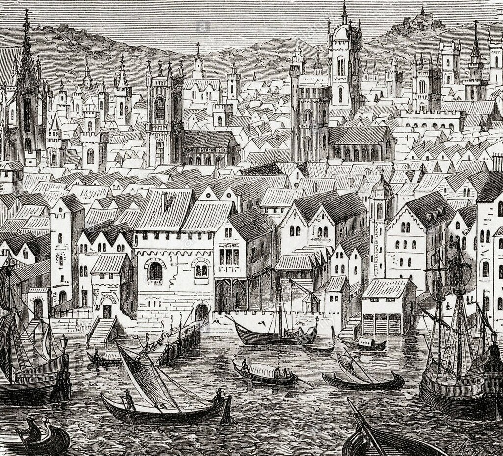
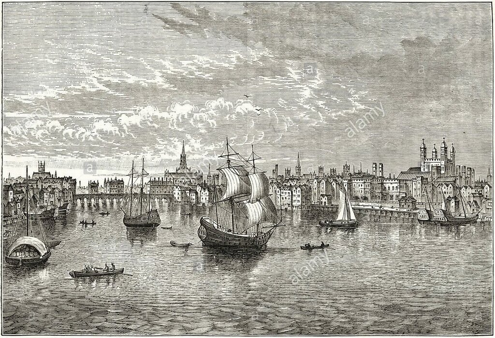
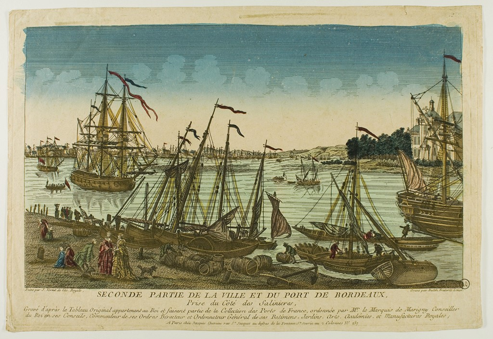

Каботажный флот Англии
By masts and keels! he takes me for the hunch-backed skipper of some coasting smack
Клянусь мачтами и килем! он думает, что я горбатый шкипер какой-нибудь каботажной шаланды.
Герман Мелвилл. Моби Дик (пер. И. М. Бернштейн)
В комментариях к нашим постам, включающим карты XVI-го века, некоторые читатели выражали недоумение по поводу неточного, мягко говоря, изображения на них Балтики. Логично было бы предположить, что при том объеме торговли, который англичане имели с прибалтийскими странами, моряки Туманного Альбиона должны были знать Балтийское море как свои пять пальцев. Склады в английских портах были заполнены прибалтийским лесом для изготовления корабельного рангоута, пенькой для такелажа, смолой и жиром морских животных для уплотнения швов судовых корпусов, и, конечно же, зерном.

«Стальной двор» (Steelyard, нем. Stalhof) — склады конторы ганзейских купцов в Лондоне, главный центр ганзейской торговли в Англии (с XV века). Гравюра из Ward and Lock's Illustrated History of the World, (ок.1882).
Однако все эти товары доставлялись в Англию на кораблях Ганзейской лиги, английские же моряки были редкими гостями на Балтике. Так же как нечасто ходили они в Средиземное море, к испанским и португальским территориям на Мадейре, Канарских и Азорских островах. Маршруты торговых кораблей Англии ограничивались, в основном, родными прибрежными водами, а также походами за рыбой в Исландию, за тонкосуконными тканями и рейнскими винами в Нидерланды, за красителями тканей и французскими винами в порты Бискайского залива, за фруктами, воском, железом и, опять же, винами, в Испанию и Португалию. На остальных торговых маршрутах господствовали купеческие суда Нидерландов, Франции, Фландрии.
Поэтому на торговых кораблях Англии была потребность в специалистах по прибрежной навигации, «пилотажу». Грузоподъемность английских кораблей редко превышала 100 тонн, были они в основном клинкерной постройки, внакрой. И хотя уже Генрих VIII привлекал в страну итальянских мастеров-специалистов по набору корпусов вгладь, даже установил субсидии для тех, кто использует набор в карвель, консервативные английские моряки долго еще не допускали нововведений на свои верфи. Поэтому крайне низким оставался процент крупных кораблей по отношению к мелким. И это положение сохранялось еще очень долго. Так, в 1626 году, когда в Бристоле была произведена инвентаризация всех кораблей и судов (an exact Survey to be taken as well of the number strength and burden of all the Shippes, barques, and vessels, now within or imployed at Sea, belonging to this Cittie and port of Bristoll), получилась следующая картина. Список включал названия 42 кораблей общим тоннажем 3559 тонн. Из них только четыре были грузоподъемностью 200 тонн и выше (самый крупный, Charles, поднимал 250 тонн), еще четыре были между 150 и 200 тоннами, семь – 100-150 тонн, и 26 – менее 100 тонн (из которых 15 вообще менее 50 тонн).

Вид на Темзу XVI века. Гравюра ок. 1880 г.
Но в Англии были, естественно, не только купеческие суда. Помимо них (и близких к ним по размерам рыболовных) были еще военные корабли Королевского флота. Наличие такого флота в первой половине XVI века (если исключить специфические галерные флотилии государств средиземноморского бассейна) было достаточно редким явлением, особенно в странах северо-западной Европы, где в случае войны необходимый флот формировался за счет аренды или реквизиции купеческих кораблей. А Ройял Нейви пополняли не только таким способом, но также за счет кораблей, спроектированных специально для военных целей; руководство ими на постоянной основе осуществляли специально созданные для этой цели государственные органы. Получили развитие два параллельных процесса, направляемых английской короной: совершенствование военного кораблестроения и развитие «королевской» навигационной науки.
Однако считать, что развитие английского флота после принятия этой стратегии получило серьезное ускорение, было бы ошибкой. Несмотря на признанные успехи Генриха VIII в строительстве военного флота, численность кораблей водоизмещением свыше 100 тонн к концу его правления составила всего 28 единиц. А в 1588 году, в год столь популярной у англичан эпопеи по разгрому Непобедимой армады, в составе королевского флота было всего 24 корабля тоннажем выше 100 тонн, причем самый крупный из них имел водоизмещение 1000 тонн.
Поэтому Королевский флот не сразу отказался от закупки кораблей частной постройки. Сэр Уолтер Рэйли, например, построил и затем продал правительству Англии один из самых крупных кораблей того времени Ark Raleigh, который в дальнейшем получил название Арк Ройял и стал флагманским кораблем Чарльза Говарда в сражении против Непобедимой армады.
Мы, таким образом, можем отметить, что крупные корабли постепенно перешли в собственность короны, хотя их число все еще оставалось невелико. Капитаны этих кораблей поголовно вышли из школы каботажного плавания. По своей мореходности крупные корабли уступали малым судам, и это продолжалось вплоть до восемнадцатого века. Они находились в кампании где-то с апреля по октябрь, остальное время года отстаивались в портах. В этом было их коренное отличие от купеческих судов, которые, несмотря на погоду и состояние моря, решали свои задачи круглый год. Действительно, можно ли было торговцам винами из Бордо упустить выгоду в самый прибыльный осенне-зимний период, пусть на море и бушевали штормы? Современные фанаты, ожидающие прибытия молодого Божеле на французские рынки, подтвердят вам, что этого не может быть никогда. Так и поколения англичан привыкли к тому, что к их столам Бордо нового урожая доставят наперекор любым препятствиям, в том числе и на море.

Бордо, XVIII век. Гравюра Balthasar Friedriech Leizelt, Bordeaux, Musée d’Aquitaine.
Чтобы сократить число неминуемых жертв кораблекрушений среди виноторговцев в этот период даже принимали специальные законодательные ограничения таких плаваний, но остановить их так и не удалось. Торговля через Ла-Манш и вдоль берегов пролива оставалась очень оживленной, обеспечивающие ее моряки лишь совершенствовали мореходность своих судов, чтобы не отправиться на дно морское.
О том, что помогало английским морякам шестнадцатого века успешно осуществлять каботажное плавание в неспокойных европейских водах, поговорим в следующий раз.